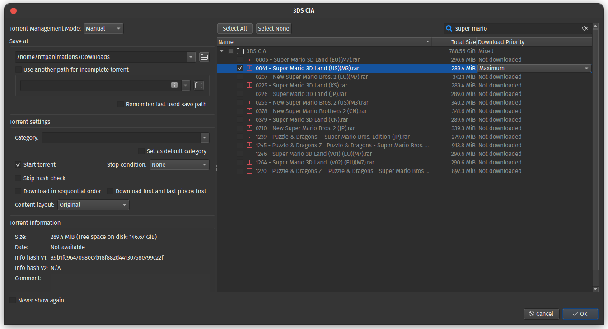

Please seed! You are here because you are interested in retro games. I packed this up because I am as well. Many, many other people have contributed to make sure we can relive old memories and build new ones. If it is all possible seed, if not, share by burning CD/DVD/USB at no charge.
Everdrive Pack (N64) - Originally formatted for krikzz's (https://krikzz.com/) EverDrive64 by smokemonster. But, don't let that fool you, this contains; a complete (USA, JAPAN, & EURO) 1G1R (one game one rom) romset, TEST CARTS!, 64DD, and more (some hacks, translations, & homebrews) for the Nintendo 64.
ALSO, HAS TJSTOGY'S GAME SERIES COLLECTIONS!! If you don't know, these are ridiculously well curated packs for the system. These are sorted into folders such as; top lists, 2-player (Co-Op & VS.), genre, licensee (eg Disney), franchise (eg Mario, Zelda) and HEAPS more. These are my favourite parts of these packs. Yeah, there's duplicates, but I think you'll find that it is worth it.
You'll discover some new gems in there for sure, let me know what you find in the comments.
Notes:
This torrent has some notes:
This torrent is really fucking big here is a way to only get the roms you want. (QBitTorrent)
Click the button next to the folder and this will deslect everything inside

Now select the roms you want to download and this will download only them